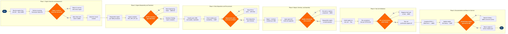

| Step | L4 Step Name | KPI / Target | Pain Point / Risk | Gate |
|---|---|---|---|---|
| 1.1 | Receive engine from aircraft and log induction | Induction record created within 4 hours of engine receipt | Incomplete removal documentation from line stations delays accurate TSN/CSN capture, risking life-limit tracking errors in AMOS | |
| 1.2 | Perform incoming borescope inspection of engine | Borescope inspection completed within 24 hours of induction; findings logged in AMOS within 2 hours of inspection | FOD damage discovered at induction not captured in aircraft logbook leads to retroactive safety investigations under FAR Part 43.9 and delays work scope confirmation | |
| 1.3 | Determine shop visit type and open work order | Work order opened and shop visit type confirmed within 8 hours of induction | Performance trend data from on-wing ACARS monitoring (SITA ACARS) may not sync to AMOS automatically, forcing manual EGT margin entry and introducing transcription errors | ⚠ |
| 2.1 | Disassemble engine modules per CMM procedures | Module teardown completed within published CMM man-hour estimate ±10% | OEM CMM revision cycle (Boeing/CFM/GE) lags regulatory changes; AMOS document revision alerts can be suppressed by users, risking use of superseded procedures | |
| 2.2 | Inspect HPC, HPT, LPT, and fan modules | 100% LLP cycle verification against AMOS life-limit records; inspection findings report issued within 48 hours of module receipt | LLP cycle counter discrepancies between AMOS and Boeing Toolbox / CAMP cause certification holds; reconciliation requires manual cross-check, averaging 6–8 hours per engine | |
| 2.3 | Identify AD/SB compliance gaps and raise EOs | Zero open mandatory ADs at engine release; all applicable SBs evaluated within 24 hours of findings report | FAA AD compliance is checked against AMOS AD library which requires manual updates; a delayed AD import (>30 days) creates regulatory exposure under FAR Part 91.409 and Part 43 Appendix D | ⚠ |
| 3.1 | Classify parts as BER, serviceable, or repairable | Parts disposition completed within 48 hours of teardown; BER rate benchmarked at ≤15% of total parts count | BER decisions without OEM-approved repair data require Designated Engineering Representative (DER) approval under FAR Part 145.109, adding 3–10 days per non-standard repair route | |
| 3.2 | Check rotable parts availability in pool | Rotable pool fill rate ≥85% for engine shop demand; critical part shortage identified within 4 hours of disposition | CAMP and AMOS rotable inventory records are not always real-time synced; double-allocation of serviceable parts across concurrent shop visits causes last-minute shortages and AOG escalations | ⚠ |
| 3.3 | Raise purchase orders for parts shortages | PO raised within 8 hours of shortage confirmation; expedited orders for AOG parts placed within 2 hours | SAP Ariba approved vendor list (AVL) may not include all OEM-authorised repair vendors; purchasing outside AVL requires Finance exception approval adding 24–48 hours to critical-path parts | |
| 4.1 | Repair and overhaul modules per CMM | Repair man-hours within ±15% of AMOS work-order estimate; first-pass quality rate ≥92% | Specialised repair capabilities (e.g., HPT blade tip restore, HPC coating) often require sub-vendor routing; each external repair adds 7–21 days TAT and requires dual-release documentation under EASA Part 145.A.75 | |
| 4.2 | Apply approved modifications and service bulletins | 100% mandatory SB incorporation confirmed before assembly; optional SB cost/benefit review completed within 4 hours | OEM modification kit availability is frequently constrained (CFM LEAP kits lead times 90–180 days); planning teams must lock SB scope 6+ months before shop visit to avoid TAT overruns | |
| 4.3 | Reassemble engine and verify build standard | Assembly completed within 48 hours of all parts arrival; dimensional check non-conformance rate ≤5% | Configuration mismatch between AMOS build record and physical engine (e.g., wrong fan blade set) is not caught until test cell, costing 12–24 hours of re-teardown time | ⚠ |
| 5.1 | Install engine on test cell and configure parameters | Test cell installation completed within 4 hours; test cell utilisation rate ≥80% | Test cell scheduling conflicts between engine shop and contracted MRO customers reduce throughput; dynamic slot allocation is managed manually via spreadsheet, not integrated with AMOS shop scheduling | |
| 5.2 | Run engine acceptance test per ECTM limits | EGT margin ≥25°C at end-of-test; vibration ≤0.5 in/sec; oil consumption ≤0.5 qt/hr | ECTM limits defined in Trax must match the engine variant spec sheet; configuration mismatch between test cell software version and OEM ATP revision causes out-of-tolerance alerts that require manual waiver processing | ⚠ |
| 6.1 | Complete FAA 8130-3 / EASA Form 1 release docs | Release documentation completed within 8 hours of test cell sign-off; zero documentation deficiencies at FAA/EASA audit | Dual-release requirements (FAA 8130-3 and EASA Form 1) for engines operated on international routes require two signatories with current authorisations; signatory availability is a recurring bottleneck, especially on night shifts | |
| 6.2 | Update engine life history and rotable records | Engine history updated within 4 hours of work order closure; LLP discrepancy rate ≤0.1% at next audit | CAMP and AMOS are not bidirectionally integrated in all configurations; manual re-entry of cycle counts from AMOS into CAMP introduces transcription errors that create airworthiness record discrepancies requiring DFP investigation | |
| 6.3 | Obtain QA airworthiness release approval | QA release granted within 4 hours of documentation package submission; zero engines released with open corrective actions | QA holds caused by incomplete corrective action evidence in AMOS (e.g., missing NDT report attachments) are the leading cause of engine release delays, averaging 6–12 hours per incident | ⚠ |
| 6.4 | Return engine to rotable pool and notify planning | Engine available in rotable pool within 2 hours of QA release; total shop visit TAT vs. target reported monthly | Rotable pool engine availability is not directly visible in SkyWORKS fleet assignment planning; network and maintenance planning teams rely on manual notifications, creating misalignment between engine availability and scheduled aircraft return-to-service dates |